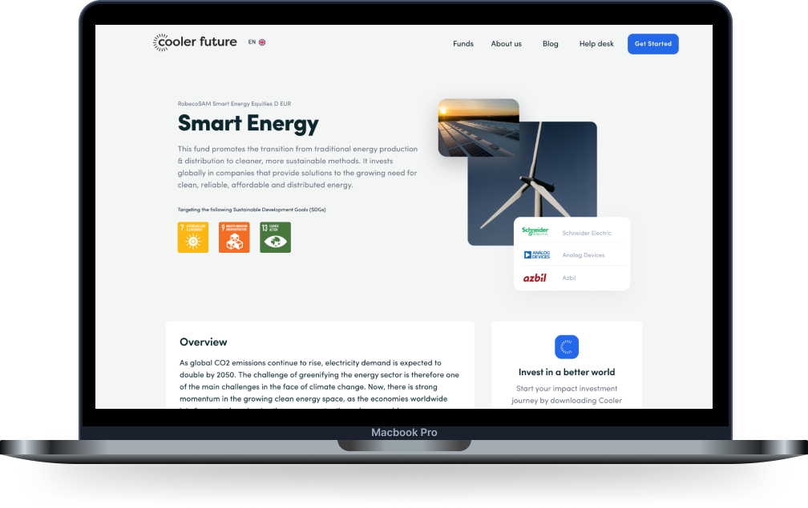

Onboarding completionDrop-off through the regulated sign-up.
← All work
Cooler
Climate fintech · 0 to 1 · 3 min read
Cooler
Future
A climate investing app that shows exactly what your money funds. I led design from the first interview to public launch.
- The problem
- Green investing was full of vague claims nobody could check. Cooler Future wanted to earn trust by showing exactly what each fund holds, and what it leaves out.
- What I did
- Led design from day one: the research, a regulated sign-up, a portfolio that shows its evidence, and the marketing site around it.
- The result
- A public launch on iOS, Android and web, open to anyone with €20, with every holding in the open.

€20
Minimum investment,
open to almost anyone
open to almost anyone
2
Audiences with opposite doubts,
looking at one screen
looking at one screen
0 → 1
From first research
to public launch
to public launch
01The problem
Green investing had a credibility problem.
It’s easy to label a fund sustainable, and much harder to stand behind the label when someone looks closer. Cooler Future built on transparency instead: what’s in the portfolio, what’s excluded, how it was verified, trade-offs included.
02Research
Two audiences, one screen.
Interviews, diary studies and card sorts turned up something the brief had missed: two audiences with opposite doubts. What each one knew, doubted and needed became the strategy, and changed how the product talked.
First-time investors
Curious but overwhelmed
“Is this actually better than leaving my money in the bank?” The product had to answer that itself, not on a separate education page.
Existing investors
Sceptical and evidence-driven
“How is this different from what I already have?” For them, transparency wasn’t decoration. It was the reason to trust.
03Onboarding
Legally complex. It doesn’t have to feel it.
Signing up meant opening a German depot account: identity checks, tax details, KYC and disclosures, all mandatory. Anything that could wait was postponed, anything not legally required was cut, and people knew what they’d need before each step.
After sign-up, people picked themes like Smart Energy and Clean Water before committing any money.

Register in 10 minutes

Choose your themes

Your portfolio
04The portfolio
Clear at a glance, deep on demand.
The portfolio is where people came back most. First it shows how the money is doing. Then it ties that to the impact behind it: sector allocation, exclusions, and how each fund’s credentials were assessed, as evidence rather than marketing.
Portfolio overview

Fund detail and impact
05Impact
Designing for honesty, not certainty.
The link between a €500 investment and a real-world outcome is rarely direct, and every framework measured impact differently. I explored goal summaries, supported-project feeds and carbon comparisons. It stayed exploratory, but set a rule the product kept: show only what the data supports.

Goals: impact by investment theme

Projects the funds support
06Education
Trust was the barrier. Understanding got past it.
First-time investors doubted themselves. Experienced ones doubted the industry. Learn covered both in self-paced courses: the basics for newcomers, and fund methodology and ratings for everyone else.

Learn: courses and articles

Progress, lesson by lesson
07Marketing website
Two surfaces. One world.
The website was usually the first thing anyone saw, so it had to carry the same transparency as the app. One visual language, one voice and one set of trust signals across both.



08How we measured it
From sign-up to first investment.
First investmentPeople moving from an account to investing.
Trust in impact dataWhether the impact claims read as clear and credible.